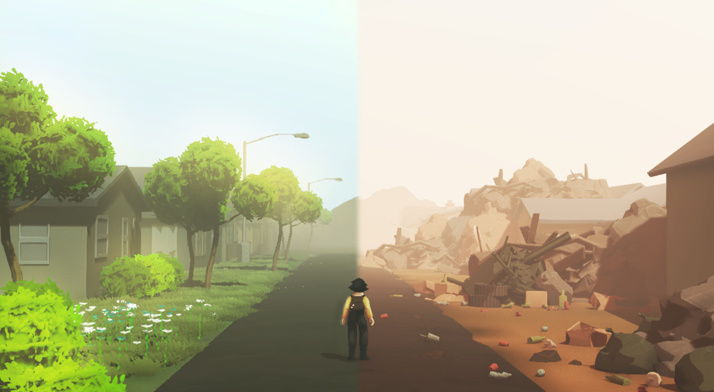
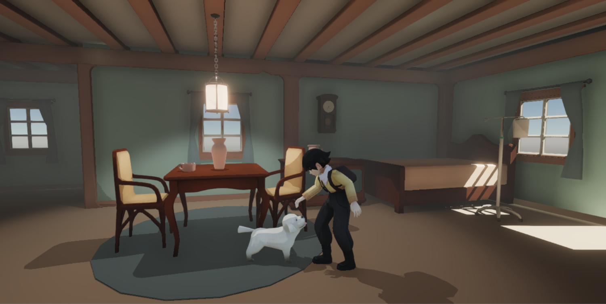
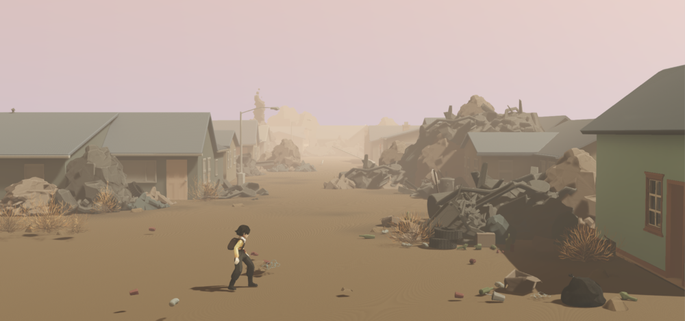
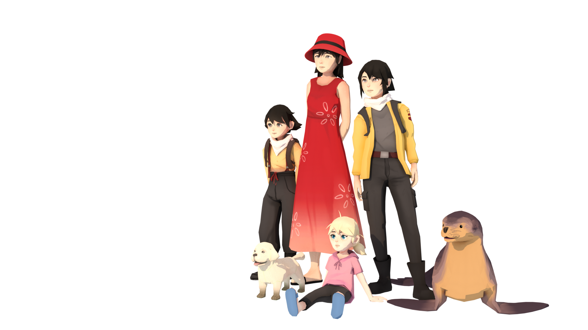
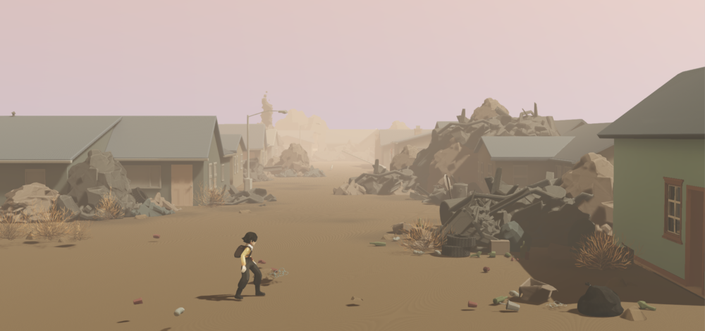
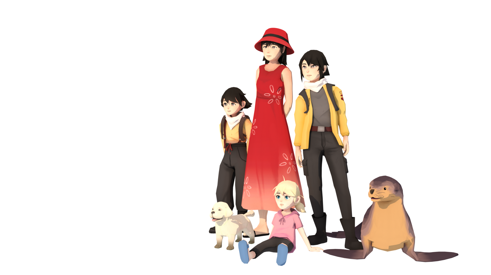
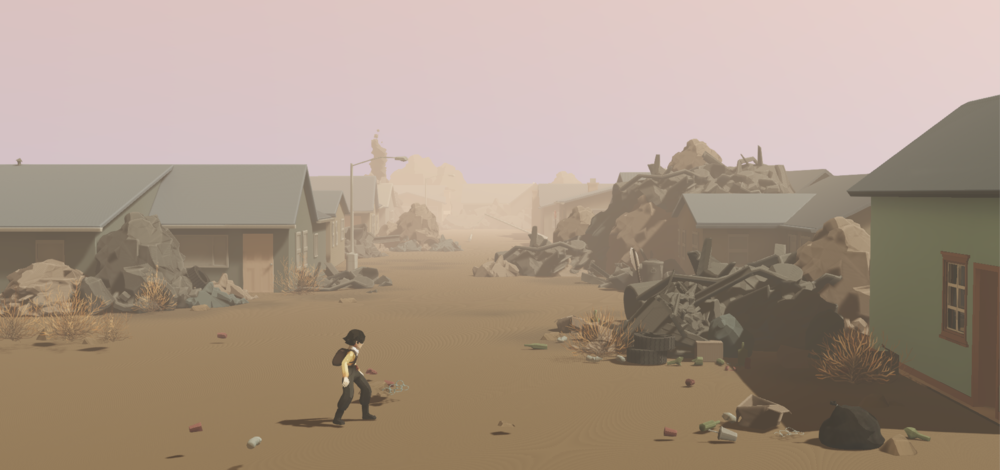
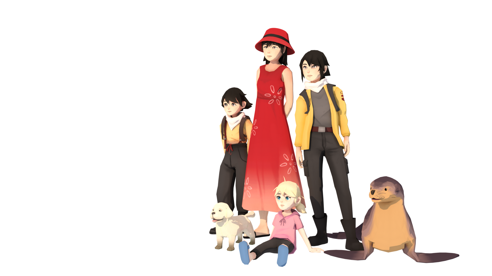
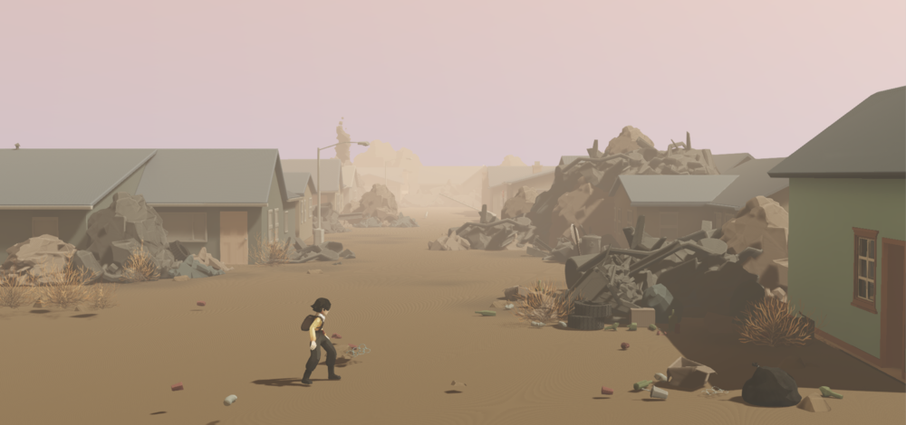
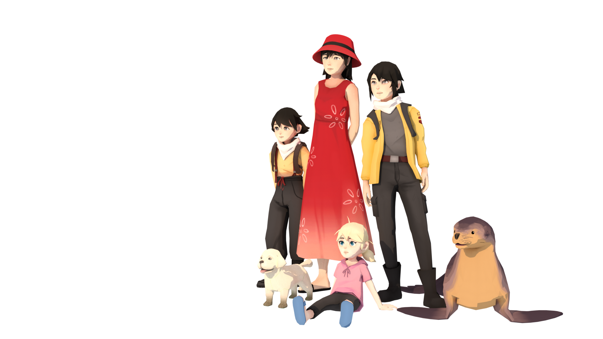

 







Plasticity is a cinematic platformer about a young girl named Noa, who explores and decides the future of her post-oil, plastic-ridden world. Players will make choices that either help or harm the environment, and see how the decisions they make shape their journey and alter the future.
Plasticity, a USC Advanced Game Project, is currently a work in progress.
I am a 3d artist for Plasticity and have worked on modeling environmental assets and animals within the game -- specifically the dog, buildings, water wheel, hanging plant, etc.